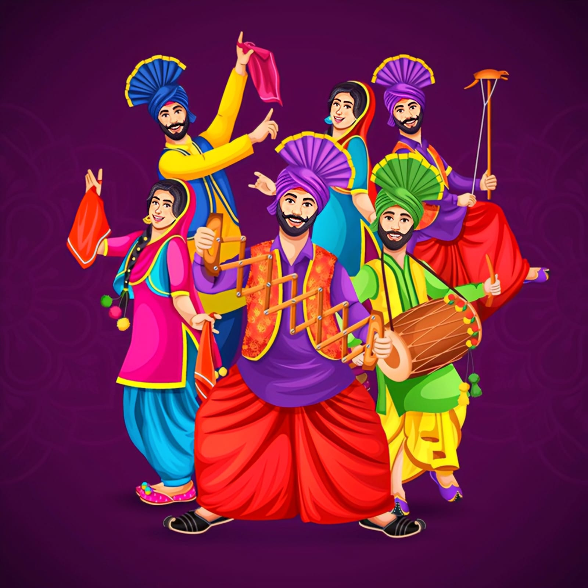

Bhangra is a traditional folk dance that originated in the Punjab region of India. It began as a harvest dance performed by farmers to celebrate the festival of Vaisakhi. Over time, it became popular worldwide as a symbol of Punjabi culture and energy. Bhangra began as a harvest dance performed by Punjabi farmers to celebrate Vaisakhi, the spring harvest festival marking the Punjabi New Year. Vaisakhi is traditionally celebrated on April 13 or 14 and holds special significance in Punjabi culture. Men would perform energetic dance movements to the rhythm of the dhol (a double-headed drum), expressing joy and gratitude for a successful harvest. bhangra, folk dance and music of the Punjab (northwestern India and northeastern Pakistan) and the popular music genre that emerged from it in the mid-to-late 20th century. Cultivated in two separate but interactive styles—one centered in South Asia, the other within the South Asian community of the United Kingdom—the newer bhangra blends various Western popular musics with the original Punjabi tradition.
Bhangra music is lively and energetic. The main instruments used are:
Performers wear bright and colorful clothes. Men usually wear a lungi or chaadra, and a colorful turban (pagri). Women wear salwar kurta with phulkari dupattas.Bhangra is a lively and energetic folk dance that originated in the Punjab region of India. It is known for its high-energy movements, vibrant music, and colorful costumes. The Bhangra costume plays a crucial role in the performance of this dance form, as it adds to the overall visual appeal and helps dancers express themselves through their attire.
Bhangra is mainly performed during Vaisakhi, weddings, and cultural festivals.Today, it is also performed in competitions and international events.Bit by bit, bhangra began to amass an audience that extended beyond the boundaries of South Asia to Britain. There the music gained momentum as a positive emblem of South Asian identity, particularly in Southall, the predominantly South Asian suburb of London’s West End. In 1979 a Southall group called Alaap released Teri Chunni De Sitare, a forward-looking album that combined the ornamented vocal melodies and metric framework of bhangra with the rhythmic drive and synthesized orchestral interjections of disco dance music. Offering a modern musical image with a distinctly South Asian flavour, the album received such an enthusiastic response that it catalyzed a craze for the “Southall sound.” The frenzy was fueled throughout the following decade not only by Alaap but by other Southall groups working the bhangra circuit, among the most notable of which were the Heera Group, Premi, and Holle Holle.